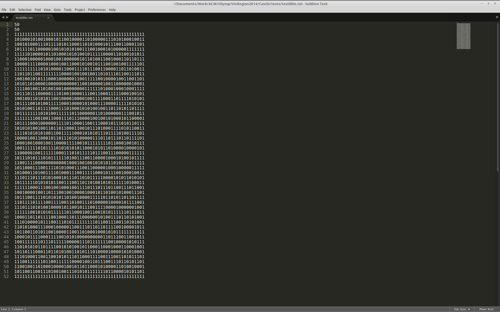
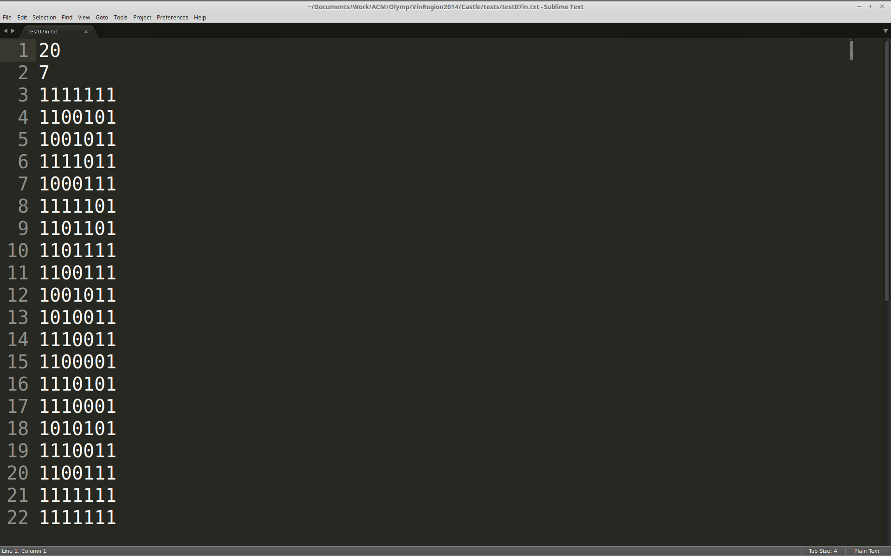
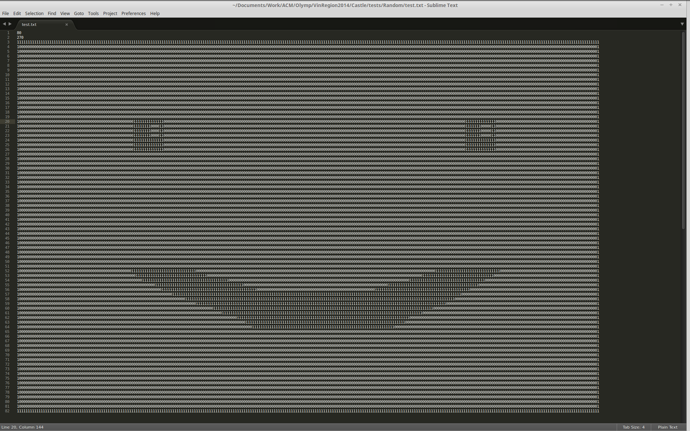

Your browser doesn't support the features required by impress.js, so you are presented with a simplified version of this presentation.
For the best experience please use the latest Chrome, Safari or Firefox browser.
Розбір задачі
Castle
Умова задачі
Стародавній замок має прямокутну форму. Замок містить щонайменше дві кімнати. Підлогу замка можна умовно поділити наM x N клітин. Кожна така клітинка містить «0» або «1», які задають порожні ділянки та стіни замку відповідно. Напишіть програму, яка б знаходила площу
найбільшої кімнати, яку можна утворити
шляхом видалення стіни або її частини,
тобто, замінивши лише одну «1» на «0».
Видаляти зовнішні стіни заборонено.
Технічні умови
Програма Castle читає з пристрою стандартного введення «план замку». Перший рядок містить ціле число M, другий – ціле число N – кількість рядків та кількість стовпчиків (3 ≤ M ≤ 1000, 3 ≤ N ≤ 1000). M наступних рядків містить по N нулів або одиниць, що йдуть поспіль (без пробілів). Перший та останній рядок, а також перший та останній стовпчик формують зовнішні стіни замку і складаються лише з одиниць. Програма виводить на пристрій площу найбільшої кімнати, яка утвориться в разі видалення внутрішньої стіни.
пропоную розглянути
Ідеї розв'язання*
Перше, що приходить в голову, це...
Повний перебір
Тобто пропонується перебирати абсолютно всі стінки, які ми можемо видалити. На кожному кроці видаляти поточну стінку, а після цього перевірити чи змінилася максимальна площа кімнати в замку. Перевірку можна виконувати
пошуком в глибину або в ширину.
Маємо, що алгоритмічна складність
даного методу складає O(n2*m2).
Оцінка:
Інша ідея заключається в...
Розфарбування
Тобто ми будемо за допомогою пошуку в глибину фарбувати кімнати в різні кольори. Це дасть нам змогу суттєво скоротити перебір!
Отже спочатку розфарбуємо кімнати в різні кольори. Будемо йти по замку, та намагатися видаляти ті стіни, що розділяють підлогу різного кольору.
Маємо, що алгоритмічна складність даного методу складає O(n*m).
Оцінка:
Постає запитання, який мінус цього методу
Пошук в ширину
Ідея заключається в заміні програмного стека чергою. Будемо поєтапно досліджувати кімнату, поки не знайдемо всі стіни.
Маємо, що алгоритмічна складність даного
методу складає O(n*m), але при цьому ми
не використовуємо програмного стеку.
Таким чином ми уникнемо його
переповнення
Оцінка:

Тепер трохи тестів



Дякую за перегляд(: